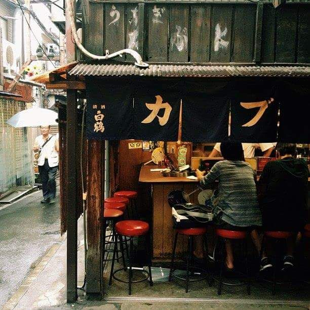

私たちの歴史を知る
Discover our History
At our ramen shop, we take great pride in preserving a recipe that has
stood the test of time since 1910 in Japan. With a rich culinary
heritage, we have meticulously maintained the same recipe for over a
century, ensuring that every bowl of ramen is a true reflection of our
authentic flavors. Our dedication to tradition and quality has earned
us a loyal following of ramen enthusiasts who appreciate the artistry
and authenticity behind our dishes.
In 2015, we ventured beyond the borders of Japan and brought our
renowned ramen to Indonesia. We were thrilled to open our first branch
in Binus Alam Sutera, introducing the Indonesian community to the rich
and captivating flavors of our beloved dish. Since then, our
popularity has grown steadily as word spread about our commitment to
preserving the essence of Japanese ramen. With each bowl we serve, we
strive to transport our customers to the bustling streets of Japan,
delivering an unforgettable culinary experience that captures the soul
of our time-honored tradition.